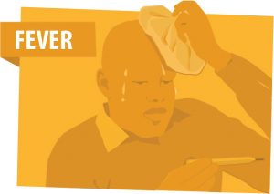

Most common Symptoms of COVID-19 are:
- Fever
- Dry cough
- Tiredness
- Difficulty in breathing (severe cases)
- WHO facts regarding the symptoms of COVID-19:
-
- People may be sick with the virus for 1 to 14 days before developing symptoms.
- Some patients may have aches and pains, nasal congestion, runny nose, sore throat or diarrhea. These symptoms are usually mild and begin gradually.
- Some people become infected but don’t develop any symptoms and don't feel unwell.
- Most people (about 80%) recover from the disease without needing special treatment.
- Around 1 out of every 6 people who gets COVID-19 becomes seriously ill and develops difficulty breathing.
- Older people, and those with underlying medical problems like high blood pressure, heart problems or diabetes, are more likely to develop serious illness.
- People with fever, cough and difficulty breathing should seek medical attention.


